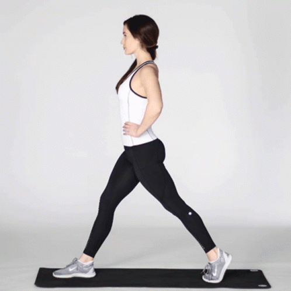

1 - Agachamento Livre
Execução: Fique de pé com os pés afastados na largura dos ombros. Flexione os joelhos e desça o quadril como se fosse sentar em uma cadeira, mantendo as costas retas. Volte à posição inicial, estendendo as pernas.
Dica: Evite que os joelhos avancem muito além da ponta dos pés e mantenha o peso nos calcanhares para proteger as articulações e ativar melhor os glúteos e quadríceps.
2 - Afundo
Execução: Dê um passo à frente com uma perna, flexionando o joelho até que a coxa fique paralela ao chão e o joelho de trás quase toque o chão. Retorne à posição inicial e alterne as pernas.
Dica: Mantenha o tronco ereto e foque no equilíbrio. O afundo trabalha bem o quadríceps, glúteos e isquiotibiais.
3 - Elevação de Panturrilhas
Execução: Fique em pé com os pés alinhados e eleve os calcanhares, ficando na ponta dos pés, depois desça devagar. Esse movimento pode ser feito no chão ou em um degrau para aumentar a amplitude.
Dica: Realize o movimento lentamente para sentir a contração nas panturrilhas e manter o equilíbrio.
4 - Ponte de Glúteos
Execução: Deite-se de costas com os joelhos dobrados e os pés apoiados no chão. Eleve o quadril até alinhar o corpo, contraindo os glúteos, e depois desça devagar.

Dica: Esse exercício trabalha o glúteo e a parte posterior das pernas. Mantenha o abdômen contraído e evite arquear a lombar para maior segurança.